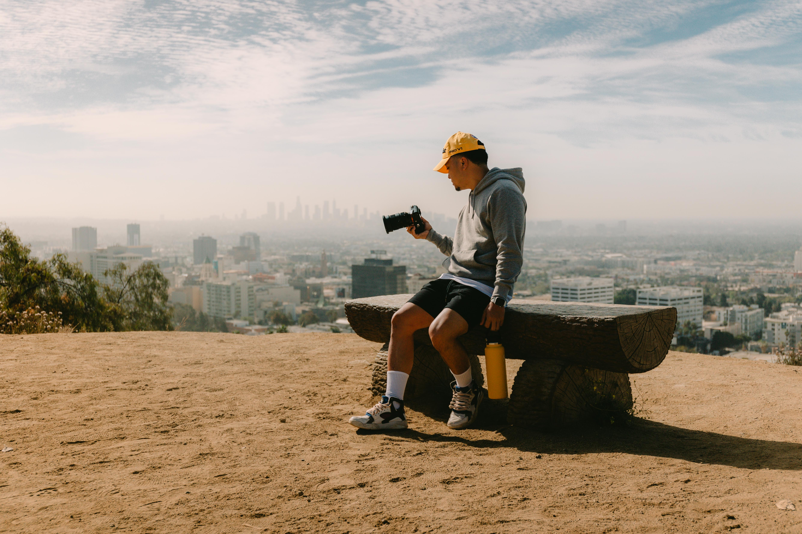
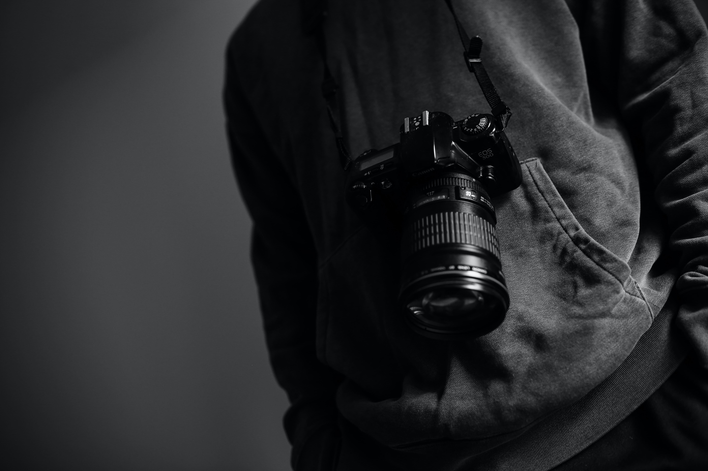
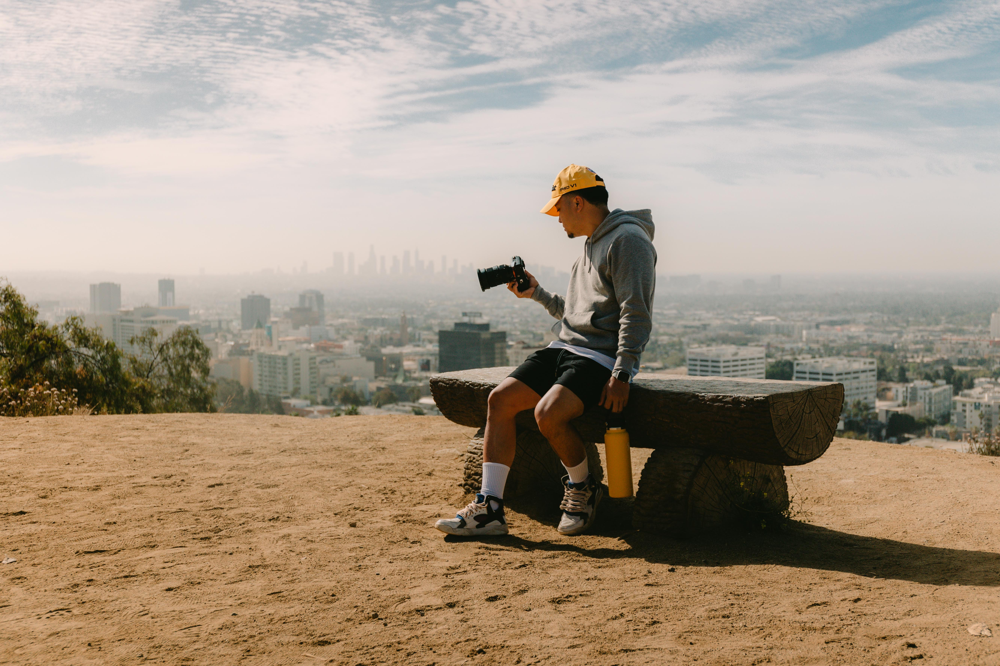
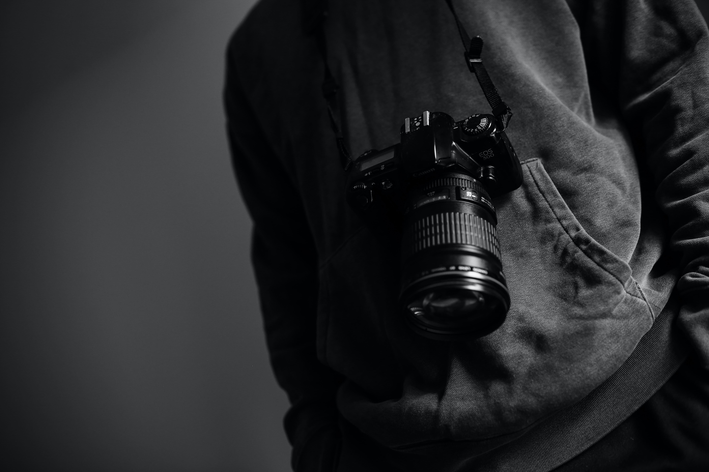

WHAT ARE LIGHTROOM PRESETS AND WHY YOU SHOULD BE USING THEM!
You’ve captured the photo, the angle is perfect and you are happy with the composition but you’re only halfway done with this image.
It’s time to edit the photo and bring out the best elements, colors, and sharpness of the image. The most popular program to use for editing
in Adobe Lightroom, which is also a great way to organize your photos as well as being the ultimate editing software. The easiest way to edit your
photos in lightroom is with photo presets that can correct the colors and grades with just a simple click. It’s a great starting point for editing images and can save you lots of time by achieving the look you want without
lots of long hours of editing. In this blog post, I am going to detail what is a preset,
how does a preset work, and why you should use Lightroom Presets.
My Lightroom Photo Presets (Mobile & Desktop)
My Lightroom Presets are popular amongst travelers and adventure photographers.
You can download either the mobile presets or the desktop presets at the links below.
Click here to download: Jackson Groves Mobile Lightroom Presets
Click here to download: Jackson Groves Desktop Lightroom Presets
What is a Lightroom Preset?
A Lightroom preset is a configuration of settings, designed to achieve a certain look or style of your photo. You install the presets into your lightroom and then
when you click on a particular preset while in the develop module, the pre-determined (pre-set) settings will apply to that photo. With just one click on a preset,
your photo can be altered in hundreds of different pre-set alterations to colors, hues, shadows, contrast, grain and more. The beauty of using presets is the consistency of style, time-management,
and simplicity they bring to your editing sessions. If you find presets that work for your style, you can speed up your workflow dramatically and you can achieve the colors and look you want without
needing to edit each photo individually. Once you click on the preset and it applies to your photo, you can then make manual adjustments because it is likely the preset won’t be perfect on every photo.
Lightroom presets are a good foundation but often you can still need to make several adjustments to each photo to make sure they are perfect.
My Lightroom Presets are designed for simple photo edits that create a bright, sunny and tropical feel for your travel photos. I often only use one-click edits for my photos but most times
I will make a few adjustments after using the preset to create the exact look I want after the preset has created the base. If you want to see some before and after comparisons of photos when
using my Lightroom Presets you can view the Mobile Lightroom Presets or the Desktop Lightroom Presets.


 


